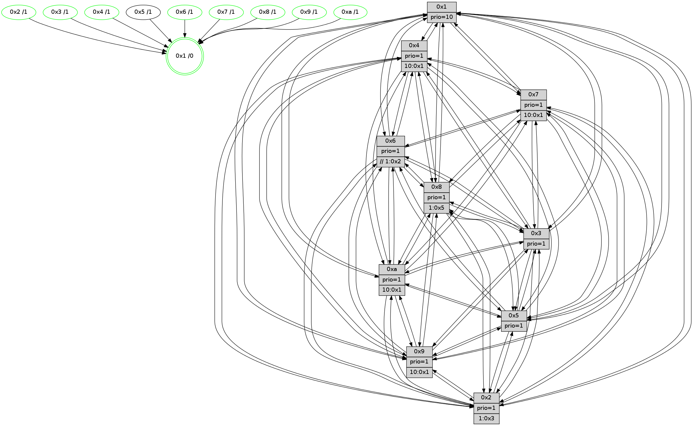

>> << IDX [start] -100 -25 -5 +0 +5 [1640.52913213]
 Previous packets
----------------------------------------------------------------------
1635.012215 beacon01(faad) #0 coord=01,02,03,04,05,06,07,0a,09,08 cycle=688.0ms assoc
-- color-indic=1 64 a9 98
1635.022197 beacon02(faad) #0 coord=01,02,03,04,05,06,07,0a,09,08 cycle=688.0ms assoc 64 3a a9
1635.032198 beacon03(faad) #0 coord=01,02,03,04,05,06,07,0a,09,08 cycle=688.0ms assoc 64 40 e4
1635.042198 beacon04(faad) #0 coord=01,02,03,04,05,06,07,0a,09,08 cycle=688.0ms assoc 64 37 0e
1635.052197 beacon05(faad) #0 coord=01,02,03,04,05,06,07,0a,09,08 cycle=688.0ms assoc 64 4d 43
1635.062197 beacon06(faad) #0 coord=01,02,03,04,05,06,07,0a,09,08 cycle=688.0ms assoc 64 c3 94
1635.072198 beacon07(faad) #0 coord=01,02,03,04,05,06,07,0a,09,08 cycle=688.0ms assoc 64 b9 d9
1635.082202 beacon0a(faad) #0 coord=01,02,03,04,05,06,07,0a,09,08 cycle=688.0ms assoc 64 c8 d2
1635.102205 beacon08(faad) #0 coord=01,02,03,04,05,06,07,0a,09,08 cycle=688.0ms assoc 64 3c 48
1635.114315 [Hello(5): seq=1042 sym=7,6,4,2,1,9,8,10,3 sysInfo=hasWarning stat=7:9,10,9,3/6:5,14,8,4/4:5,13,11,1/2:1,5,8,2/1:4,12,4,0/9:1,9,5,0/8:3,4,0,10/10:9,8,9,13/3:5,3,11,1]
1635.117354 [Color(8) seq=629 @0:0 prio=1 >1.@5,1.@6,1.@7,1.@9]
1635.119025 [Hello(1): seq=951 sym=4,2,9,5,10,3,8,6,7 sysInfo=coloring-mode-on,ColoringModeRequestCalled stat=4:6,13,2,5/2:4,15,0,9/9:4,3,0,7/5:11,3,5,13/10:12,11,8,11/3:1,10,11,0/8:6,6,15,9/6:12,6,2,8/7:13,14,7,5]
1635.122063 [Hello(3): seq=1042 sym=1,7,6,2,4,8,9,10,5 sysInfo=hasWarning stat=1:2,9,3,0/7:5,13,13,1/6:5,7,1,0/2:10,11,3,0/4:13,8,10,1/8:15,4,0,10/9:12,13,4,5/10:5,5,9,9/5:8,4,14,4]
1635.125250 [Hello(2): seq=1038 sym=4,5,7,6,3,9,8,10,1 sysInfo=hasWarning stat=4:4,7,3,1/5:4,3,4,5/7:12,1,13,5/6:2,3,0,0/3:0,2,0,0/9:14,4,1,14/8:2,1,14,1/10:14,7,0,0/1:5,2,7,0]
1635.128017 [Hello(6): seq=1042 sym=3,2,5,4,7,9,8,10,1 sysInfo=hasWarning stat=3:10,1,5,2/2:7,13,9,3/5:1,3,9,8/4:11,0,2,12/7:8,2,8,2/9:2,4,8,15/8:10,3,11,12/10:11,5,1,2/1:14,6,12,1]
1635.132450 [Color(6) seq=674 @0:0 prio=1 >>1.@2,1.@3,1.@4]
1635.135224 [Color(3) seq=671 @0:0 prio=1]
1635.137005 [Color(2) seq=602 @0:0 prio=1 >10.@1,1.@3,1.@4,1.@5]
----------------------------------------------------------------------
1635.800347 beacon01(faad) #0 coord=01,02,03,04,05,06,07,0a,09,08 cycle=688.0ms assoc
-- color-indic=1 64 15 9d
1635.810331 beacon02(faad) #0 coord=01,02,03,04,05,06,07,0a,09,08 cycle=688.0ms assoc 64 86 ac
1635.820330 beacon03(faad) #0 coord=01,02,03,04,05,06,07,0a,09,08 cycle=688.0ms assoc 64 fc e1
1635.830331 beacon04(faad) #0 coord=01,02,03,04,05,06,07,0a,09,08 cycle=688.0ms assoc 64 8b 0b
1635.840331 beacon05(faad) #0 coord=01,02,03,04,05,06,07,0a,09,08 cycle=688.0ms assoc 64 f1 46
1635.850330 beacon06(faad) #0 coord=01,02,03,04,05,06,07,0a,09,08 cycle=688.0ms assoc 64 7f 91
1635.860330 beacon07(faad) #0 coord=01,02,03,04,05,06,07,0a,09,08 cycle=688.0ms assoc 64 05 dc
1635.870336 beacon0a(faad) #0 coord=01,02,03,04,05,06,07,0a,09,08 cycle=688.0ms assoc 64 74 d7
1635.890336 beacon08(faad) #0 coord=01,02,03,04,05,06,07,0a,09,08 cycle=688.0ms assoc 64 80 4d
1635.902509 [Hello(8): seq=986 sym=5,2,3,7,9,6,4,10,1 sysInfo=hasWarning stat=5:7,7,13,4/2:12,13,6,0/3:11,7,12,7/7:1,11,12,2/9:13,6,1,10/6:5,4,9,5/4:1,9,5,3/10:6,5,6,8/1:2,0,0,0]
1635.905875 [Hello(9): seq=986 sym=2,5,3,4,7,6,8,10,1 sysInfo=hasWarning stat=2:10,8,10,15/5:14,14,14,2/3:10,11,9,9/4:3,6,1,0/7:1,1,0,0/6:8,6,6,6/8:15,2,15,11/10:0,1,0,0/1:10,12,13,1]
1635.908698 [Color(9) seq=568 @0:0 prio=1 >10.@1,1.@5,1.@6,1.@7]
1635.910490 [Hello(10): seq=975 sym=6,2,3,8,7,5,9,1 sysInfo=hasWarning stat=6:5,8,6,10/2:11,12,10,4/3:4,0,3,2/8:14,12,12,8/7:11,1,5,2/5:0,1,12,5/9:9,1,5,1/1:0,7,11,1]
1635.913838 [Color(10) seq=619 @0:0 prio=1 >10.@1,1.@5,1.@6,1.@7]
1635.916519 [Hello(7): seq=1042 sym=2,3,5,6,8,4,9,10,1 sysInfo=hasWarning stat=2:15,5,6,8/3:3,12,13,9/5:2,15,3,7/6:14,14,5,2/8:8,2,12,3/4:7,14,8,2/9:2,4,1,1/10:11,6,2,1/1:1,0,10,0]
1635.919705 [Hello(4): seq=1042 sym=5,8,6,2,3,9,7,10,1 sysInfo=hasWarning stat=5:2,4,5,6/8:11,15,11,1/6:9,8,1,7/2:10,12,9,5/3:14,14,2,3/9:4,14,6,7/7:13,8,10,3/10:2,10,13,1/1:3,8,11,1]
1635.923827 [Color(4) seq=559 @0:0 prio=1 >10.@1,1.@2,1.@3,1.@5]
1635.927914 [Color(7) seq=549 @0:0 prio=1 >10.@1,1.@5,1.@6,1.@8]
----------------------------------------------------------------------
1636.588478 beacon01(faad) #0 coord=01,02,03,04,05,06,07,0a,09,08 cycle=688.0ms assoc
-- color-indic=1 64 d1 93
1636.598461 beacon02(faad) #0 coord=01,02,03,04,05,06,07,0a,09,08 cycle=688.0ms assoc 64 42 a2
1636.608459 beacon03(faad) #0 coord=01,02,03,04,05,06,07,0a,09,08 cycle=688.0ms assoc 64 38 ef
1636.618460 beacon04(faad) #0 coord=01,02,03,04,05,06,07,0a,09,08 cycle=688.0ms assoc 64 4f 05
1636.628459 beacon05(faad) #0 coord=01,02,03,04,05,06,07,0a,09,08 cycle=688.0ms assoc 64 35 48
1636.638461 beacon06(faad) #0 coord=01,02,03,04,05,06,07,0a,09,08 cycle=688.0ms assoc 64 bb 9f
1636.648461 beacon07(faad) #0 coord=01,02,03,04,05,06,07,0a,09,08 cycle=688.0ms assoc 64 c1 d2
1636.658464 beacon0a(faad) #0 coord=01,02,03,04,05,06,07,0a,09,08 cycle=688.0ms assoc 64 b0 d9
1636.668466 beacon09(faad) #0 coord=01,02,03,04,05,06,07,0a,09,08 cycle=688.0ms assoc 64 3e 0e
1636.678467 beacon08(faad) #0 coord=01,02,03,04,05,06,07,0a,09,08 cycle=688.0ms assoc 64 44 43
1636.690590 [Hello(5): seq=1043 sym=7,6,4,2,1,9,8,10,3 sysInfo=hasWarning stat=7:10,11,9,3/6:6,15,8,4/4:6,14,11,1/2:2,6,8,2/1:5,12,4,0/9:2,10,5,0/8:4,5,0,10/10:10,9,9,13/3:6,4,11,1]
1636.694907 [Hello(2): seq=1039 sym=4,5,7,6,3,9,8,10,1 sysInfo=hasWarning stat=4:5,8,3,1/5:5,3,4,5/7:13,2,13,5/6:2,3,0,0/3:0,2,0,0/9:15,5,1,14/8:3,1,14,1/10:15,8,0,0/1:5,2,7,0]
1636.699949 [Color(2) seq=603 @0:0 prio=1 >10.@1,1.@3,1.@4,1.@5]
1636.701905 [Hello(1): seq=952 sym=4,2,9,5,10,3,8,6,7 sysInfo=coloring-mode-on,ColoringModeRequestCalled stat=4:7,14,2,5/2:5,0,0,9/9:4,3,0,7/5:11,3,5,13/10:12,11,8,11/3:2,11,11,0/8:7,6,15,9/6:13,7,2,8/7:14,15,7,5]
1636.705007 [Hello(3): seq=1043 sym=1,7,6,2,4,8,9,10,5 sysInfo=hasWarning stat=1:2,10,3,0/7:6,14,13,1/6:5,7,1,0/2:10,12,3,0/4:14,9,10,1/8:0,4,0,10/9:13,14,4,5/10:6,5,9,9/5:9,4,14,4]
1636.708128 [Color(3) seq=672 @0:0 prio=1]
1636.717018 [Hello(6): seq=1043 sym=3,2,5,4,7,9,8,10,1 sysInfo=hasWarning stat=3:10,2,5,2/2:7,14,9,3/5:2,3,9,8/4:12,1,2,12/7:9,3,8,2/9:3,5,8,15/8:11,3,11,12/10:12,6,1,2/1:14,6,12,1]
1636.721744 [Color(6) seq=675 @0:0 prio=1 >>1.@2,1.@3,1.@4]
1636.725614 [STC(1) #0.300 new-neigh,tree-change,inconsistent-stability,stable,to-color d=0]
----------------------------------------------------------------------
1637.376607 beacon01(faad) #0 coord=01,02,03,04,05,06,07,0a,09,08 cycle=688.0ms assoc
-- color-indic=1 64 6d 96
1637.386589 beacon02(faad) #0 coord=01,02,03,04,05,06,07,0a,09,08 cycle=688.0ms assoc 64 fe a7
1637.396589 beacon03(faad) #0 coord=01,02,03,04,05,06,07,0a,09,08 cycle=688.0ms assoc 64 84 ea
1637.406589 beacon04(faad) #0 coord=01,02,03,04,05,06,07,0a,09,08 cycle=688.0ms assoc 64 f3 00
1637.416592 beacon05(faad) #0 coord=01,02,03,04,05,06,07,0a,09,08 cycle=688.0ms assoc 64 89 4d
1637.426590 beacon06(faad) #0 coord=01,02,03,04,05,06,07,0a,09,08 cycle=688.0ms assoc 64 07 9a
1637.436592 beacon07(faad) #0 coord=01,02,03,04,05,06,07,0a,09,08 cycle=688.0ms assoc 64 7d d7
1637.446596 beacon0a(faad) #0 coord=01,02,03,04,05,06,07,0a,09,08 cycle=688.0ms assoc 64 0c dc
1637.466595 beacon08(faad) #0 coord=01,02,03,04,05,06,07,0a,09,08 cycle=688.0ms assoc 64 f8 46
1637.478198 [STC(6)->1 #0.300 new-neigh,tree-change,inconsistent-stability,stable,to-color d=1]
1637.479492 [STC(3)->1 #0.300 new-neigh,tree-change,inconsistent-stability,stable,to-color d=1]
1637.480734 [STC(2)->1 #0.300 new-neigh,tree-change,inconsistent-stability,stable,to-color d=1]
1637.482458 [Color(1) seq=723 @0:0 prio=10]
1637.484423 [Hello(10): seq=976 sym=6,2,3,8,7,5,9,4,1 sysInfo=hasWarning stat=6:6,9,6,10/2:12,13,10,4/3:5,1,3,2/8:15,12,12,8/7:12,2,5,2/5:1,1,12,5/9:9,1,5,1/4:0,1,0,0/1:1,7,12,1]
1637.488505 [STC(10)->1 #0.300 new-neigh,tree-change,inconsistent-stability,stable,to-color d=1]
1637.493612 [STC(9)->1 #0.300 new-neigh,tree-change,inconsistent-stability,stable,to-color d=1]
1637.495110 [TreeStatus(5)-.->1 #0.300 new-neigh,tree-change,inconsistent-stability,stable child=1]
1637.496514 [Color(9) seq=569 @0:0 prio=1 >10.@1,1.@5,1.@6,1.@7]
1637.500196 [Hello(4): seq=1043 sym=5,8,6,2,3,9,7,10,1 sysInfo=hasWarning stat=5:3,4,5,6/8:12,15,11,1/6:10,9,1,7/2:11,13,9,5/3:15,15,2,3/9:4,14,6,7/7:13,9,10,3/10:2,10,13,1/1:4,8,12,1]
1637.503022 [STC(4)->1 #0.300 new-neigh,tree-change,inconsistent-stability,stable,to-color d=1]
1637.505306 [Color(4) seq=560 @0:0 prio=1 >10.@1,1.@2,1.@3,1.@5]
1637.508125 [Color(10) seq=620 @0:0 prio=1 >10.@1,1.@5,1.@6,1.@7]
1637.512612 [STC(8)->1 #0.300 new-neigh,tree-change,inconsistent-stability,stable,to-color d=1]
1637.515997 [Hello(7): seq=1043 sym=2,3,5,6,8,4,9,10,1 sysInfo=hasWarning stat=2:0,6,6,8/3:4,13,13,9/5:3,15,3,7/6:15,15,5,2/8:9,2,12,3/4:7,14,8,2/9:2,4,1,1/10:11,6,2,1/1:2,0,11,0]
1637.519454 [STC(7)->1 #0.300 new-neigh,tree-change,inconsistent-stability,stable,to-color d=1]
1637.523328 [Color(7) seq=550 @0:0 prio=1 >10.@1,1.@5,1.@6,1.@8]
----------------------------------------------------------------------
1638.164736 beacon01(faad) #0 coord=01,02,03,04,05,06,07,0a,09,08 cycle=688.0ms assoc
-- color-indic=1 64 79 f8
1638.174719 beacon02(faad) #0 coord=01,02,03,04,05,06,07,0a,09,08 cycle=688.0ms assoc 64 ea c9
1638.184718 beacon03(faad) #0 coord=01,02,03,04,05,06,07,0a,09,08 cycle=688.0ms assoc 64 90 84
1638.194720 beacon04(faad) #0 coord=01,02,03,04,05,06,07,0a,09,08 cycle=688.0ms assoc 64 e7 6e
1638.204719 beacon05(faad) #0 coord=01,02,03,04,05,06,07,0a,09,08 cycle=688.0ms assoc 64 9d 23
1638.214718 beacon06(faad) #0 coord=01,02,03,04,05,06,07,0a,09,08 cycle=688.0ms assoc 64 13 f4
1638.224720 beacon07(faad) #0 coord=01,02,03,04,05,06,07,0a,09,08 cycle=688.0ms assoc 64 69 b9
1638.234724 beacon0a(faad) #0 coord=01,02,03,04,05,06,07,0a,09,08 cycle=688.0ms assoc 64 18 b2
1638.244725 beacon09(faad) #0 coord=01,02,03,04,05,06,07,0a,09,08 cycle=688.0ms assoc 64 96 65
1638.254726 beacon08(faad) #0 coord=01,02,03,04,05,06,07,0a,09,08 cycle=688.0ms assoc 64 ec 28
1638.265979 [Hello(1): seq=953 sym=4,2,9,5,10,3,8,6,7 sysInfo=coloring-mode-on,ColoringModeRequestCalled stat=4:8,15,3,5/2:5,0,0,9/9:5,4,1,7/5:11,3,5,14/10:13,12,9,11/3:2,11,12,0/8:7,6,0,9/6:13,7,3,8/7:15,0,8,5]
1638.269392 [Color(8) seq=631 @0:0 prio=1 >1.@5,1.@6,1.@7,1.@9]
1638.271269 [Hello(3): seq=1044 sym=1,7,6,2,4,8,9,10,5 sysInfo=hasWarning stat=1:2,11,4,0/7:7,15,14,1/6:6,8,1,0/2:10,12,4,0/4:15,10,11,1/8:1,4,1,10/9:13,15,5,5/10:7,6,10,9/5:10,4,14,5]
1638.274080 [Color(3) seq=673 @0:0 prio=1]
1638.277417 [Hello(5): seq=1044 sym=7,6,4,2,1,9,8,10,3 sysInfo=hasWarning stat=7:11,12,10,3/6:7,0,8,4/4:7,15,12,1/2:2,7,8,2/1:6,12,5,0/9:2,11,5,0/8:4,6,1,10/10:10,10,9,13/3:7,5,11,1]
1638.281767 [Hello(6): seq=1044 sym=3,2,5,4,7,9,8,10,1 sysInfo=hasWarning stat=3:10,2,6,2/2:7,14,10,3/5:3,3,9,9/4:13,2,3,12/7:10,4,9,2/9:3,6,9,15/8:12,3,12,12/10:13,7,2,2/1:14,7,13,1]
1638.284614 [Color(6) seq=676 @0:0 prio=1 >>1.@2,1.@3,1.@4]
1638.286170 [Hello(2): seq=1040 sym=4,5,7,6,3,9,8,10,1 sysInfo=hasWarning stat=4:6,9,4,1/5:6,3,4,6/7:14,3,14,5/6:3,4,0,0/3:1,3,0,0/9:0,6,2,14/8:3,1,15,1/10:0,9,1,0/1:6,3,8,0]
1638.290910 [Color(2) seq=604 @0:0 prio=1 >10.@1,1.@3,1.@4,1.@5]
----------------------------------------------------------------------
1638.952867 beacon01(faad) #0 coord=01,02,03,04,05,06,07,0a,09,08 cycle=688.0ms assoc
-- color-indic=1 64 c5 fd
1638.962850 beacon02(faad) #0 coord=01,02,03,04,05,06,07,0a,09,08 cycle=688.0ms assoc 64 56 cc
1638.972851 beacon03(faad) #0 coord=01,02,03,04,05,06,07,0a,09,08 cycle=688.0ms assoc 64 2c 81
1638.982849 beacon04(faad) #0 coord=01,02,03,04,05,06,07,0a,09,08 cycle=688.0ms assoc 64 5b 6b
1638.992850 beacon05(faad) #0 coord=01,02,03,04,05,06,07,0a,09,08 cycle=688.0ms assoc 64 21 26
1639.002851 beacon06(faad) #0 coord=01,02,03,04,05,06,07,0a,09,08 cycle=688.0ms assoc 64 af f1
1639.012851 beacon07(faad) #0 coord=01,02,03,04,05,06,07,0a,09,08 cycle=688.0ms assoc 64 d5 bc
1639.022854 beacon0a(faad) #0 coord=01,02,03,04,05,06,07,0a,09,08 cycle=688.0ms assoc 64 a4 b7
1639.042856 beacon08(faad) #0 coord=01,02,03,04,05,06,07,0a,09,08 cycle=688.0ms assoc 64 50 2d
1639.056322 [Hello(8): seq=988 sym=5,2,3,7,9,6,4,10,1 sysInfo=hasWarning stat=5:9,7,13,4/2:13,15,6,0/3:13,9,12,7/7:3,13,13,2/9:14,7,1,10/6:7,6,9,5/4:2,10,5,3/10:7,6,6,8/1:4,0,1,0]
1639.059369 [Hello(7): seq=1044 sym=2,3,5,6,8,4,9,10,1 sysInfo=hasWarning stat=2:1,7,7,8/3:5,14,14,9/5:4,15,3,7/6:0,0,6,2/8:9,3,12,3/4:7,14,8,2/9:2,4,1,1/10:11,6,2,1/1:3,0,11,0]
1639.061880 [Hello(9): seq=988 sym=2,5,3,4,7,6,8,10,1 sysInfo=hasWarning stat=2:12,10,11,15/5:0,14,14,2/3:12,13,10,9/4:5,8,2,0/7:3,3,1,0/6:10,8,7,6/8:0,3,0,11/10:1,2,0,0/1:12,13,14,1]
1639.064427 [Hello(10): seq=977 sym=6,2,3,8,7,5,9,4,1 sysInfo=hasWarning stat=6:7,10,7,10/2:13,14,11,4/3:6,2,4,2/8:15,13,13,8/7:13,3,6,2/5:2,1,12,5/9:9,1,5,1/4:0,1,0,0/1:2,7,12,1]
1639.068023 [Color(9) seq=570 @0:0 prio=1 >10.@1,1.@5,1.@6,1.@7]
1639.069625 [Color(7) seq=551 @0:0 prio=1 >10.@1,1.@5,1.@6,1.@8]
1639.073451 [Color(4) seq=561 @0:0 prio=1 >10.@1,1.@2,1.@3,1.@5]
1639.075979 [Color(10) seq=621 @0:0 prio=1 >10.@1,1.@5,1.@6,1.@7]
1639.077904 [Color(5) seq=551 @0:0 prio=1]
1639.086270 [Color(1) seq=724 @0:0 prio=10]
----------------------------------------------------------------------
1639.740998 beacon01(faad) #0 coord=01,02,03,04,05,06,07,0a,09,08 cycle=688.0ms assoc
-- color-indic=1 64 01 f3
1639.750980 beacon02(faad) #0 coord=01,02,03,04,05,06,07,0a,09,08 cycle=688.0ms assoc 64 92 c2
1639.760980 beacon03(faad) #0 coord=01,02,03,04,05,06,07,0a,09,08 cycle=688.0ms assoc 64 e8 8f
1639.770982 beacon04(faad) #0 coord=01,02,03,04,05,06,07,0a,09,08 cycle=688.0ms assoc 64 9f 65
1639.780981 beacon05(faad) #0 coord=01,02,03,04,05,06,07,0a,09,08 cycle=688.0ms assoc 64 e5 28
1639.790980 beacon06(faad) #0 coord=01,02,03,04,05,06,07,0a,09,08 cycle=688.0ms assoc 64 6b ff
1639.800982 beacon07(faad) #0 coord=01,02,03,04,05,06,07,0a,09,08 cycle=688.0ms assoc 64 11 b2
1639.810987 beacon0a(faad) #0 coord=01,02,03,04,05,06,07,0a,09,08 cycle=688.0ms assoc 64 60 b9
1639.820987 beacon09(faad) #0 coord=01,02,03,04,05,06,07,0a,09,08 cycle=688.0ms assoc 64 ee 6e
1639.830987 beacon08(faad) #0 coord=01,02,03,04,05,06,07,0a,09,08 cycle=688.0ms assoc 64 94 23
1639.843858 [Hello(1): seq=954 sym=4,2,9,5,10,3,8,6,7 sysInfo=coloring-mode-on,ColoringModeRequestCalled stat=4:8,15,3,5/2:6,1,0,9/9:5,4,1,7/5:12,3,5,14/10:13,12,9,11/3:3,12,12,0/8:8,7,0,9/6:14,8,3,8/7:15,0,8,5]
1639.846575 [Hello(6): seq=1045 sym=3,2,5,4,7,9,8,10,1 sysInfo=hasWarning stat=3:10,2,6,2/2:8,15,10,3/5:3,4,9,9/4:13,3,3,12/7:11,5,9,2/9:4,7,9,15/8:13,4,12,12/10:14,8,2,2/1:15,8,13,1]
1639.850689 [Color(6) seq=677 @0:0 prio=1 >>1.@2,1.@3,1.@4]
1639.853107 [Hello(3): seq=1045 sym=1,7,6,2,4,8,9,10,5 sysInfo=hasWarning stat=1:3,12,4,0/7:8,0,14,1/6:7,9,1,0/2:11,13,4,0/4:15,11,11,1/8:2,5,1,10/9:14,0,5,5/10:8,7,10,9/5:11,5,14,5]
1639.857520 [Color(3) seq=674 @0:0 prio=1]
1639.858806 [Hello(5): seq=1045 sym=7,6,4,2,1,9,8,10,3 sysInfo=hasWarning stat=7:11,12,10,3/6:8,1,8,4/4:7,15,12,1/2:3,8,8,2/1:6,13,5,0/9:2,11,5,0/8:4,6,1,10/10:10,10,9,13/3:7,5,11,1]
1639.863754 [Color(8) seq=632 @0:0 prio=1 >1.@5,1.@9,1.@a]
1639.866180 [Hello(2): seq=1041 sym=4,5,7,6,3,9,8,10,1 sysInfo=hasWarning stat=4:7,10,4,1/5:6,4,4,6/7:15,4,14,5/6:3,4,0,0/3:1,3,0,0/9:1,7,2,14/8:4,1,15,1/10:0,10,1,0/1:7,4,8,0]
1639.869961 [Color(2) seq=605 @0:0 prio=1 >1.@3,1.@4,1.@5,1.@9]